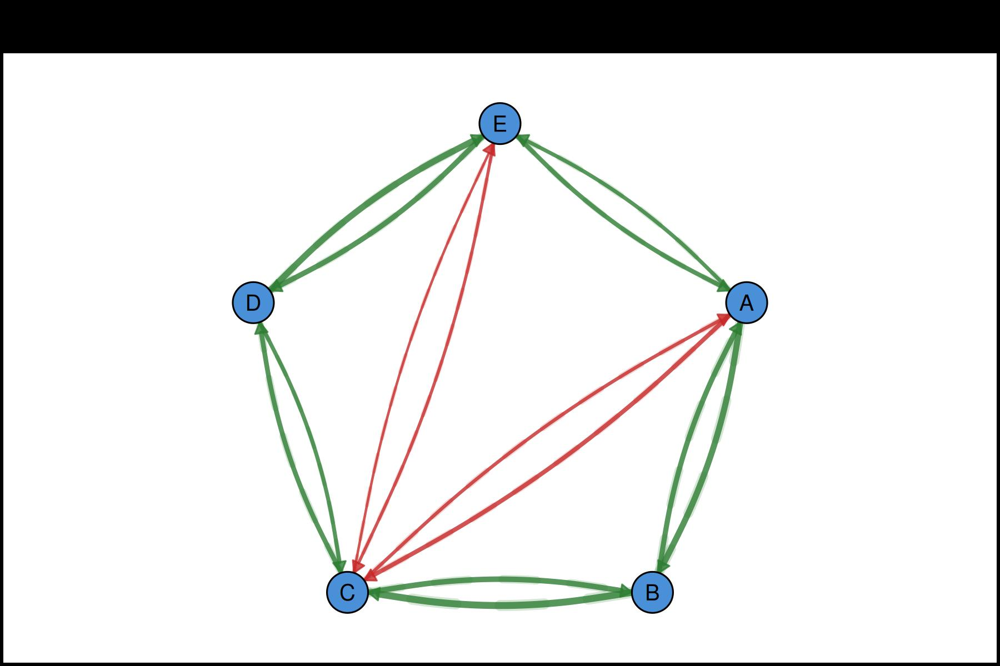

This script demonstrates edge uncertainty visualization features.
Create a weighted transition matrix (e.g., regression coefficients)
set.seed(123)
states <- c("A", "B", "C", "D", "E")
mat <- matrix(c(
0.00, 0.45, -0.32, 0.00, 0.28,
0.38, 0.00, 0.52, 0.00, 0.00,
-0.25, 0.41, 0.00, 0.35, -0.18,
0.00, 0.00, 0.29, 0.00, 0.47,
0.33, 0.00, -0.22, 0.39, 0.00
), nrow = 5, byrow = TRUE, dimnames = list(states, states))
# Count non-zero edges
n_edges <- sum(mat != 0)
# Generate simulated statistical data
set.seed(42)
ci_widths <- runif(n_edges, 0.05, 0.25) # CI uncertainty widths
ci_lower <- abs(mat[mat != 0]) - runif(n_edges, 0.1, 0.2)
ci_upper <- abs(mat[mat != 0]) + runif(n_edges, 0.1, 0.2)
p_values <- c(0.001, 0.023, 0.045, 0.089, 0.002,
0.034, 0.067, 0.001, 0.056, 0.012,
0.078, 0.003, 0.041)#Example 1: Basic CI Underlays
CI width shown as translucent underlay beneath edges
splot(mat,
layout = "circle",
edge_ci = ci_widths,
edge_ci_alpha = 0.2,
edge_ci_scale = 3,
node_size = 5,
label_size = 0.8,
title = "Confidence Interval Underlays"
)
Example 2: P-Values with Significance Stars
Automatic star notation: *** p<0.001, ** p<0.01, * p<0.05
splot(mat,
layout = "circle",
edge_labels = TRUE,
edge_label_p = p_values,
edge_label_stars = TRUE,
edge_label_size = 0.5,
edge_label_bg = "white",
node_size = 5,
label_size = 0.8,
title = "Edge Labels with Significance Stars"
)
Example 3: Custom Label Template with CI Range
Template placeholders: {est}, {low}, {up}, {p}, {stars}, {range}
splot(mat,
layout = "circle",
edge_label_template = "{est}\n[{low}, {up}]",
edge_ci_lower = ci_lower,
edge_ci_upper = ci_upper,
edge_label_digits = 2,
edge_label_size = 0.45,
edge_label_bg = "white",
node_size = 5,
label_size = 0.8,
title = "Estimates with CI Ranges"
)
Example 4: Full Statistical Labels
Combine estimate, CI, and p-value in one label
splot(mat,
layout = "spring",
seed = 42,
edge_label_template = "{est}{stars}\n({range})",
edge_ci_lower = ci_lower,
edge_ci_upper = ci_upper,
edge_label_p = p_values,
edge_label_stars = TRUE,
edge_label_digits = 2,
edge_label_size = 0.4,
edge_label_bg = "white",
edge_ci = ci_widths,
edge_ci_alpha = 0.15,
edge_ci_scale = 2.5,
node_size = 5,
label_size = 0.8,
positive_color = "#1976D2",
negative_color = "#D32F2F",
theme = "minimal",
title = "Full Statistical Edge Labels with CI Underlays"
)
#> Warning: 'positive_color' is deprecated, use 'edge_positive_color' instead.
#> Warning: 'negative_color' is deprecated, use 'edge_negative_color' instead.
Example 5: P-Value Only Labels
splot(mat,
layout = "circle",
edge_label_template = "{p}",
edge_label_p = p_values,
edge_label_p_digits = 3,
edge_label_p_prefix = "p=",
edge_label_size = 0.5,
edge_label_bg = "white",
node_size = 5,
label_size = 0.8,
title = "P-Value Labels"
)
Example 6: CI Underlay Styling Options
Customize CI underlay appearance
splot(mat,
layout = "circle",
edge_ci = ci_widths,
edge_ci_alpha = 0.25,
edge_ci_scale = 4,
edge_ci_style = 1, # 1=solid, 2=dashed, 3=dotted
edge_ci_color = "gray50", # Custom color (NA uses edge color)
node_size = 5,
label_size = 0.8,
title = "Custom CI Underlay Style"
)
Example 7: Combining with Themes
splot(mat,
layout = "spring",
seed = 123,
edge_ci = ci_widths,
edge_ci_alpha = 0.2,
edge_ci_scale = 3,
edge_labels = TRUE,
edge_label_stars = TRUE,
edge_label_p = p_values,
edge_label_size = 0.5,
node_size = 5,
label_size = 0.8,
theme = "dark",
title = "CI and Stars with Dark Theme"
)
Example 8: Publication-Ready Network
Clean visualization suitable for academic papers
splot(mat,
layout = "circle",
# CI underlays
edge_ci = ci_widths,
edge_ci_alpha = 0.12,
edge_ci_scale = 2.5,
edge_ci_style = 1,
# Labels with estimates and stars
edge_label_template = "{est}{stars}",
edge_label_p = p_values,
edge_label_stars = TRUE,
edge_label_digits = 2,
edge_label_size = 0.5,
edge_label_bg = "white",
# Node styling
node_size = 5,
node_fill = "#E8E8E8",
node_border_color = "#404040",
node_border_width = 1.5,
label_size = 0.9,
label_color = "#202020",
# Edge colors
positive_color = "#2E7D32",
negative_color = "#C62828",
# Theme
theme = "minimal",
title = "Publication-Ready Network"
)
#> Warning: 'positive_color' is deprecated, use 'edge_positive_color' instead.
#> Warning: 'negative_color' is deprecated, use 'edge_negative_color' instead.
cat("\nCI and P-Value demo completed!\n")
#>
#> CI and P-Value demo completed!
cat("\nKey parameters:\n")
#>
#> Key parameters:
cat(" edge_ci - CI width for underlay thickness\n")
#> edge_ci - CI width for underlay thickness
cat(" edge_ci_scale - Multiplier for underlay width\n")
#> edge_ci_scale - Multiplier for underlay width
cat(" edge_ci_alpha - Underlay transparency\n")
#> edge_ci_alpha - Underlay transparency
cat(" edge_label_p - P-values for significance\n")
#> edge_label_p - P-values for significance
cat(" edge_label_stars - Show significance stars\n")
#> edge_label_stars - Show significance stars
cat(" edge_label_template - Custom label format\n")
#> edge_label_template - Custom label format
cat(" edge_ci_lower/upper - CI bounds for labels\n")
#> edge_ci_lower/upper - CI bounds for labels